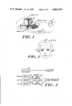
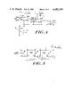

HeadMaster
An ultrasonic headset that turned head movement into cursor movement — 'If you can move your head, you can move your world'

Overview
The HeadMaster was a head-operated cursor control system that translated rotational head movement into cursor movement on a computer display. It consisted of a lightweight (3 oz / ~85g) headset worn over the head, holding three 40 kHz ultrasonic receivers (piezoelectric transducers). A small control unit (approximately 5.5 × 5.13 × 1.5 inches, 5 lbs) sat on top of the computer monitor and housed the ultrasonic transmitter. The headset connected by wire to the control unit, which plugged into the computer's mouse port (Macintosh ADB, Apple II, or IBM serial/PS2). A sip-and-puff mouth switch — a thin tube the user puffed into — functioned as the mouse button.
The system was invented by Keith K. Davison, who filed US Patent 4,682,159 on June 20, 1984 (granted July 21, 1987), originally assigned to Personics Corporation of Concord, Massachusetts. Personics shipped the first HeadMaster units in April 1986, priced at $795 for Apple Macintosh. The patent and technology were acquired by the Prentke Romich Company (PRC) of Wooster, Ohio in 1989, which continued development through the 'HeadMaster Plus' and eventually a wireless 'HeadMaster 2000' version demonstrated at CSUN 1999.
The interaction was purely rotational: yaw (turning the head left/right) controlled horizontal cursor movement, pitch (nodding up/down) controlled vertical movement. Translational head movements (leaning toward or away from the screen) were ignored by design. The system used phase-comparison circuitry built from discrete JK flip-flops to produce signed (direction + magnitude) position signals — a notably elegant analog solution predating microcontrollers. The 40 kHz wave was sampled at 1,000 times per second with a 4 MHz time base, achieving phase measurement resolution of 100 counts per wavelength cycle, translating to approximately 300 parts per inch of spatial resolution. The included ScreenTyper software placed an on-screen keyboard strip (~1 inch tall) at the bottom or top of the Macintosh screen with characters arranged by frequency of use — not QWERTY — to minimize the head movement needed for typing.
Deep dive
The HeadMaster emerged at a pivotal moment in personal computing: the Macintosh had introduced the graphical user interface to consumers in 1984, but the mouse — the primary input device for GUIs — required hand and arm control. For people with quadriplegia, ALS, cerebral palsy, spinal cord injuries, and other motor impairments, the mouse was a barrier. Personics Corporation, a small Massachusetts company, set out to solve this by making the head itself the pointing device. The patent application, filed in June 1984, explicitly critiques the then-available alternatives: 'manipulating the mouse is difficult, and it often takes several hours to fully master' and 'the constant shifting required between the mouse and the keyboard makes mice virtually useless for word processing and accounting spread sheets.' The HeadMaster's pitch was different: it required no hands at all, used 'a natural and ordinary human movement,' and the person's hands never needed to leave the keyboard.
The HeadMaster used relative (not absolute) head positioning — like a mouse, not like a touchscreen. You didn't need to sit perfectly centered. The software included a velocity-based gain: fast head movements produced proportionally larger cursor jumps; slow movements gave fine pixel-level control. A hysteresis dead zone suppressed cursor jitter from natural head tremor — you could breathe and blink without the cursor vibrating. The sip-and-puff switch provided a clean, discrete click without requiring any limb movement. For text entry, the ScreenTyper on-screen keyboard showed characters arranged by frequency (space and 'e' nearest the center), dynamically shifting the keyboard strip between top and bottom of the screen so the user could see context. The promotional brochure's headline was blunt and brilliant: 'If you can move your head, you can move your world.'
The HeadMaster survived as a product line for approximately 20 years — remarkable longevity for specialized HCI hardware. It is held in two major museum collections: the Smithsonian National Museum of American History (catalog #NMAH_1297824, part of the 'Input Devices and Controllers' collection) and the Computer History Museum (catalog #102662701, gift of Lon Safko). In the first rigorous three-way head-pointer comparison study (Angelo et al., 1991), the HeadMaster and the Trace Center's Long-Range Optical Pointer tied for top performance, both significantly outperforming the FreeWheel infrared reflective system. PRC merged with Saltillo in 2019 to become PRC-Saltillo; the HeadMaster line appears to have been discontinued sometime after the 2000s, superseded by camera-based head tracking and eye-gaze systems. But its core insight — that embodied head movement, not hands, could drive the graphical interface — remains a foundational concept in accessibility HCI and anticipatory design.
Team & pioneers
- Keith K. Davison. Inventor. Filed US Patent 4,682,159 in 1984 for Personics Corporation. Designed the ultrasonic phase-comparison tracking system.
- Personics Corporation. Concord, Massachusetts. Originally developed and marketed the HeadMaster starting in 1986. (Distinct from the Personics music-recording company of Menlo Park, CA.)
- Prentke Romich Company (PRC). Wooster, Ohio. Acquired the patent and technology in 1989. Barry Romich (co-founder/president), David Hershberger, and Lamar Schlabach led continued development into HeadMaster Plus and HeadMaster 2000.
- Lon Safko. Donated the HeadMaster unit to the Computer History Museum. Author and assistive technology advocate.
Media

Sources
- US Patent 4,682,159 — 'Apparatus and method for controlling a cursor on a computer display' (Davison / Personics Corp)
- Smithsonian National Museum of American History — HeadMaster collection entry
- Computer History Museum — HeadMaster catalog entry
- Personics promotional brochure — 'Introducing HeadMaster' (1986)
- Prentke Romich — HeadMaster Plus Manual (full PDF)
- Angelo, Deterding & Weisman (1991) — Three-system head-pointer comparison study (HeadMaster, FreeWheel, LROP)
- Open Assistive — Ultrasonic Head Tracker Mouse rebuild project with photos
- RESNA 2003 — Head pointer technology comparison survey